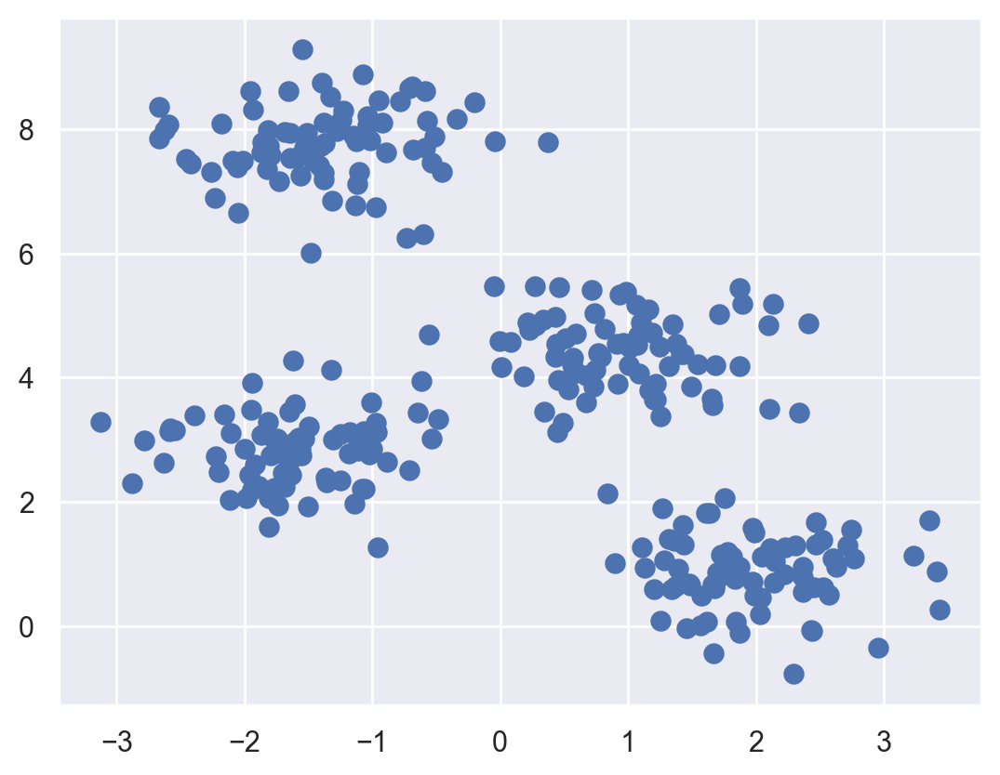
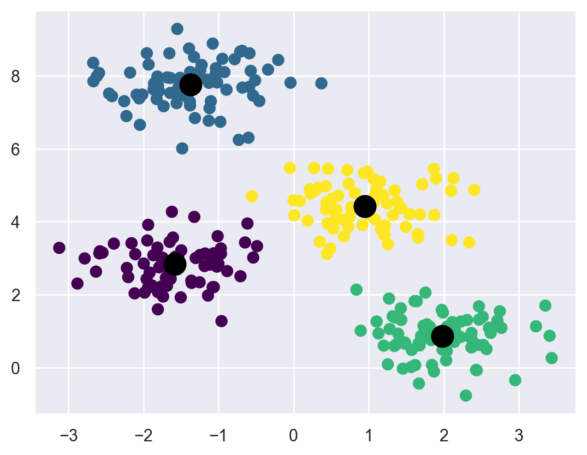
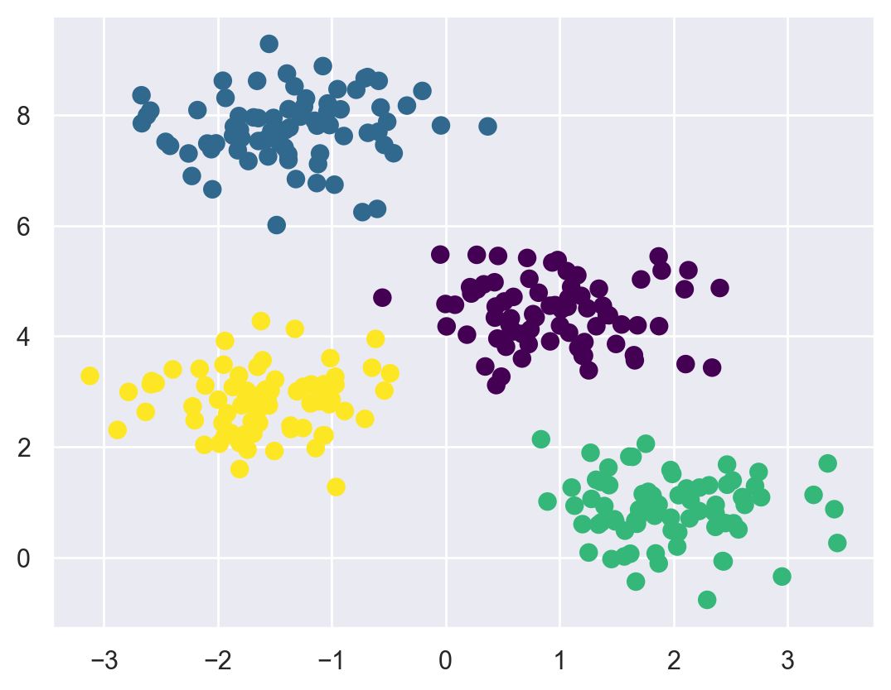
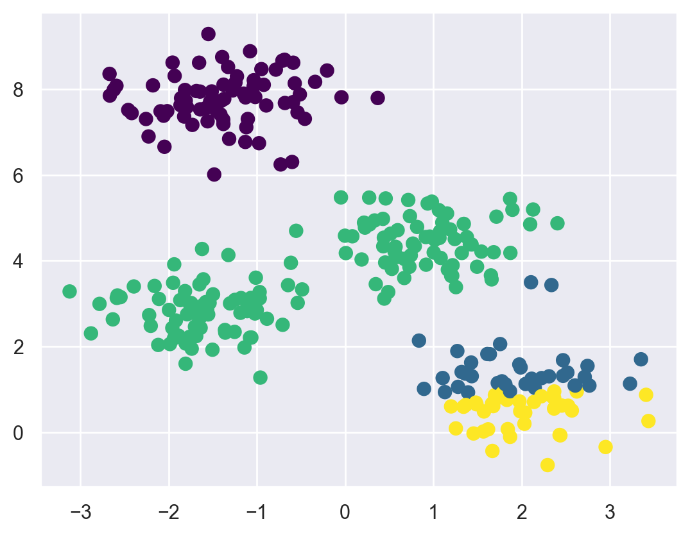
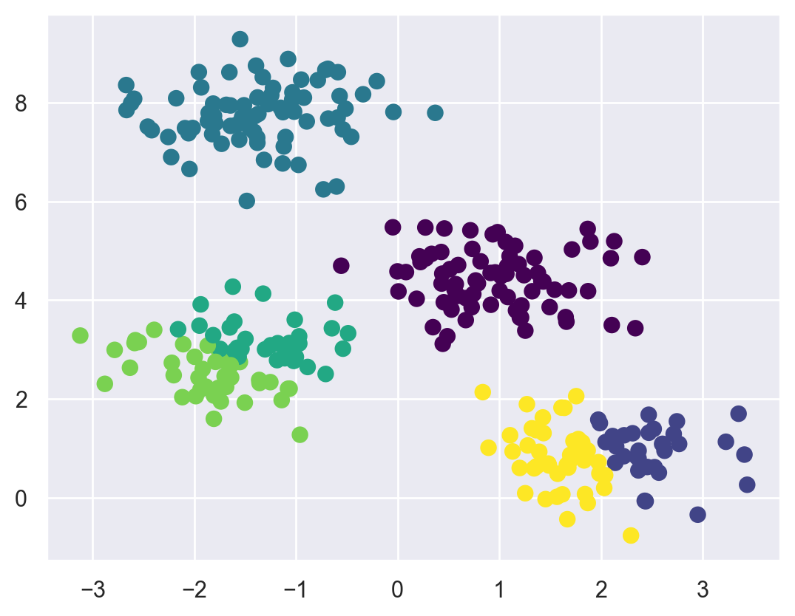
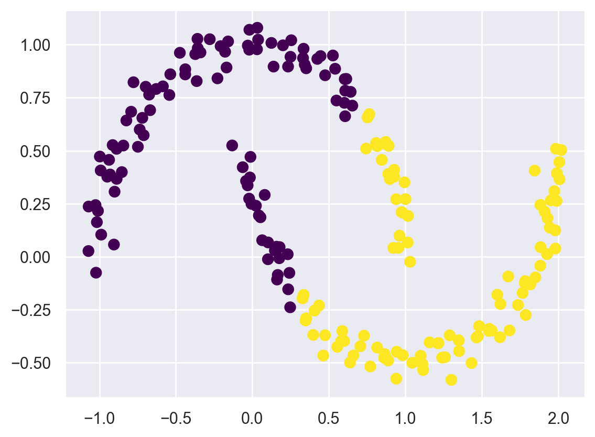
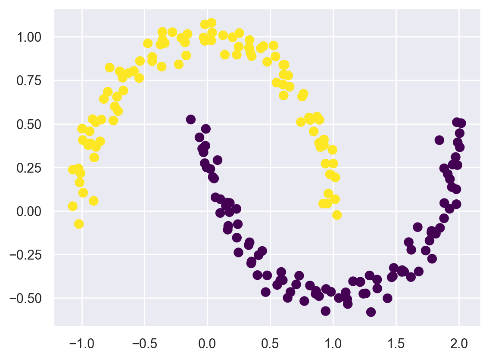
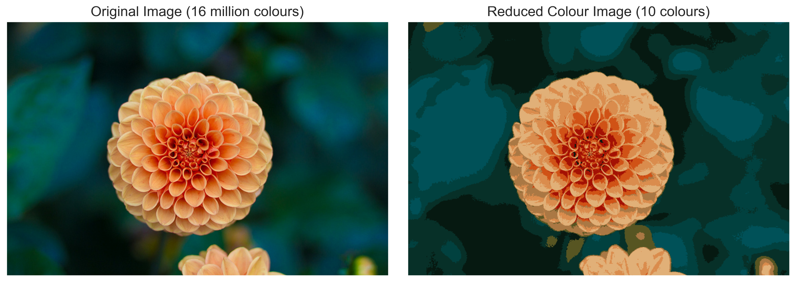
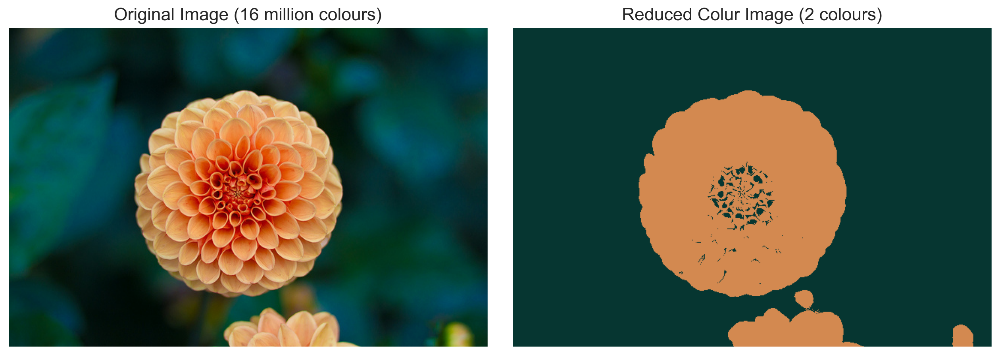

import warnings
warnings.filterwarnings("ignore")
import matplotlib.pyplot as plt
%matplotlib inline
%config InlineBackend.figure_format = 'retina'
plt.style.use("ggplot")
import seaborn as sns; sns.set()
import numpy as npSK Part 6: K-Means Clustering
Credit: This tutorial was adapted from Python Data Science Handbook.
This tutorial is about an unsupervised machine learning method: clustering. Clustering algorithms attempt to find groups of objects such that the objects in a group will be similar to one another and different from the objects in other groups. By far, the most popular method is k-means clustering, which is the topic of this tutorial.
It should be noted that clustering is still an active area of research. There are dozens of clustering algorithms in the literature, yet no single algorithm outperforms the others on all clustering problems, illustrating the difficulty of this task in general.
The k-means algorithm searches for a pre-determined number of clusters within an unlabeled multidimensional dataset. It accomplishes this using a simple conception of what the optimal clustering looks like:
- The “cluster center” is the arithmetic mean of all the points belonging to the cluster.
- Each point is closer to its own cluster center than to other cluster centers.
Those two assumptions are the basis of the k-means model. Let’s take a look at a simple dataset and see the k-means result.
First, let’s generate a two-dimensional dataset containing four distinct blobs. To emphasize that this is an unsupervised algorithm, we will leave the labels out of the visualization.
from sklearn.datasets import make_blobs
X, y_true = make_blobs(n_samples=300, centers=4,
cluster_std=0.60, random_state=0)
plt.scatter(X[:, 0], X[:, 1], s=50);
By visual inspection, it is easy to pick out the four clusters.
Pay attention to how we import the KMeans method below, set the number of clusters we want, and fit the method with our data.
from sklearn.cluster import KMeans
kmeans = KMeans(n_clusters=4)
kmeans.fit(X)
y_kmeans = kmeans.predict(X)Let’s visualize the results by plotting the data colored by these labels. We will also plot the cluster centers as determined by the k-means estimator:
plt.scatter(X[:, 0], X[:, 1], c=y_kmeans, s=50, cmap='viridis')
centers = kmeans.cluster_centers_
plt.scatter(centers[:, 0], centers[:, 1], c='black', s=200, alpha=1.0);
The good news is that the k-means algorithm (at least in this simple case) assigns the points to clusters very similarly to how we might assign them by eye.
The k-Means algorithm is simple enough that we can write it in a few lines of code. The following is a very basic implementation:
from sklearn.metrics import pairwise_distances_argmin
def find_clusters(X, n_clusters, rseed=2):
# 1. Randomly choose clusters
rng = np.random.RandomState(rseed)
i = rng.permutation(X.shape[0])[:n_clusters]
centers = X[i]
while True:
# 2a. Assign labels based on closest center
labels = pairwise_distances_argmin(X, centers)
# 2b. Find new centers from means of points
new_centers = np.array([X[labels == i].mean(0)
for i in range(n_clusters)])
# 2c. Check for convergence
if np.all(centers == new_centers):
break
centers = new_centers
return centers, labels
centers, labels = find_clusters(X, 4)
plt.scatter(X[:, 0], X[:, 1], c=labels,
s=50, cmap='viridis');
Potential issues with the k-means algorithm
1 - The globally optimal result may not be achieved
First, although the k-means algorithm is guaranteed to improve the result in each step, there is no assurance that it will lead to the global best solution. For example, if we use a different random seed in our simple procedure, we might get a poor result:
centers, labels = find_clusters(X, 4, rseed=0)
plt.scatter(X[:, 0], X[:, 1], c=labels,
s=50, cmap='viridis');
Here the k-means algorithm has converged, but has not converged to a globally optimal configuration. For this reason, it is common for the algorithm to be run for multiple starting guesses, as indeed Scikit-Learn does by default (set by the n_init parameter, which defaults to 10).
2 - The number of clusters must be selected beforehand
Another common challenge with k-means is that you must tell it how many clusters you expect: it cannot learn the number of clusters from the data. For example, if we ask the algorithm to identify six clusters, it will happily proceed and find the best six clusters:
labels = KMeans(6, random_state=0).fit_predict(X)
plt.scatter(X[:, 0], X[:, 1], c=labels,
s=50, cmap='viridis');
3 - k-means is limited to linear cluster boundaries
The fundamental model assumptions of k-means (points will be closer to their own cluster center than to others) means that the algorithm will often be ineffective if the clusters have complicated geometries.
In particular, the boundaries between k-means clusters will always be linear, which means that it will fail for more complicated boundaries. Consider the following data, along with the cluster labels found by the typical k-means approach:
from sklearn.datasets import make_moons
X, y = make_moons(200, noise=.05, random_state=0)labels = KMeans(2, random_state=0).fit_predict(X)
plt.scatter(X[:, 0], X[:, 1], c=labels,
s=50, cmap='viridis');
In order to discover non-linear boundaries, we can use the SpectralClustering method. It uses the graph of nearest neighbors to compute a higher-dimensional representation of the data, and then assigns labels using a k-means algorithm:
from sklearn.cluster import SpectralClustering
model = SpectralClustering(n_clusters=2, affinity='nearest_neighbors',
assign_labels='kmeans')
labels = model.fit_predict(X)
plt.scatter(X[:, 0], X[:, 1], c=labels,
s=50, cmap='viridis');
Example: k-means for color compression
One interesting application of clustering is in color compression within images. For example, imagine you have an image with millions of colors. In most images, a large number of the colors will be unused, and many of the pixels in the image will have similar or even identical colors.
For example, consider the image shown in the following figure, which is from the Scikit-Learn datasets module (for this to work, you’ll have to have the pillow Python package installed).
# Note: this requires the ``pillow`` package to be installed
from sklearn.datasets import load_sample_image
flower = load_sample_image("flower.jpg")
plt.figure(figsize=(20,10))
ax = plt.axes(xticks=[], yticks=[])
ax.imshow(flower);The image itself is stored in a three-dimensional array of size (height, width, RGB), containing red/blue/green contributions as integers from 0 to 255:
flower.shape(427, 640, 3)Let’s have a look at the color (red/blue/green contributions) of the top left pixel. The k-means algorithm will be clustering these colors expressed as 3-dimensional objects.
flower[0,0,:]array([ 2, 19, 13], dtype=uint8)We will reshape the data to [n_samples x n_features], and rescale the colors so that they lie between 0 and 1:
data = flower / 255.0 # use 0...1 scale
data = data.reshape(427 * 640, 3)
data.shape(273280, 3)Now let’s reduce these 16 million colors to just 10 colors, using a k-means clustering across the pixel space. Because we are dealing with a very large dataset, we will use the mini batch k-means, which operates on subsets of the data to compute the result much more quickly than the standard k-means algorithm:
from sklearn.cluster import MiniBatchKMeans
num_clusters = 10
kmeans = MiniBatchKMeans(num_clusters)
kmeans.fit(data)
predicted_data = kmeans.predict(data)
new_colors = kmeans.cluster_centers_[predicted_data]The result is a re-coloring of the original pixels, where each pixel is assigned the color of its closest cluster center. Plotting these new colors in the image space rather than the pixel space shows us the effect of this:
flower_recolored = new_colors.reshape(flower.shape)
fig, ax = plt.subplots(1, 2, figsize=(16, 6),
subplot_kw=dict(xticks=[], yticks=[]))
fig.subplots_adjust(wspace=0.05)
ax[0].imshow(flower)
ax[0].set_title('Original Image (16 million colours)', size=16)
ax[1].imshow(flower_recolored)
ax[1].set_title('Reduced Colour Image (10 colours)', size=16);
Some detail is certainly lost in the right picture, but the overall image is still easily recognizable. This image on the right achieves a compression factor of around 1.6 million!
For fun, below is the output of k-means with only 2 clusters.
num_clusters = 2
kmeans = MiniBatchKMeans(num_clusters)
kmeans.fit(data)
predicted_data = kmeans.predict(data)
new_colors = kmeans.cluster_centers_[predicted_data]
flower_recolored = new_colors.reshape(flower.shape)
fig, ax = plt.subplots(1, 2, figsize=(16, 6),
subplot_kw=dict(xticks=[], yticks=[]))
fig.subplots_adjust(wspace=0.05)
ax[0].imshow(flower)
ax[0].set_title('Original Image (16 million colours)', size=16)
ax[1].imshow(flower_recolored)
ax[1].set_title('Reduced Colur Image (2 colours)', size=16);